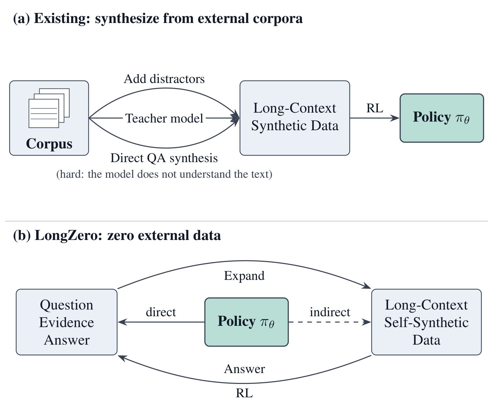
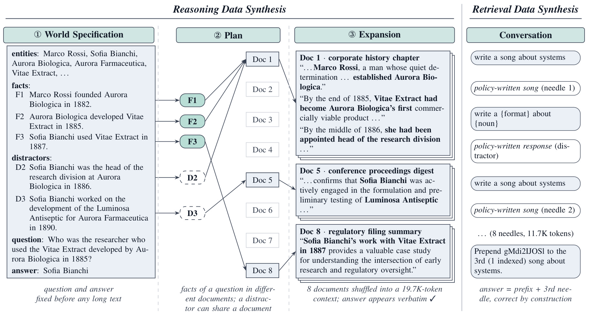
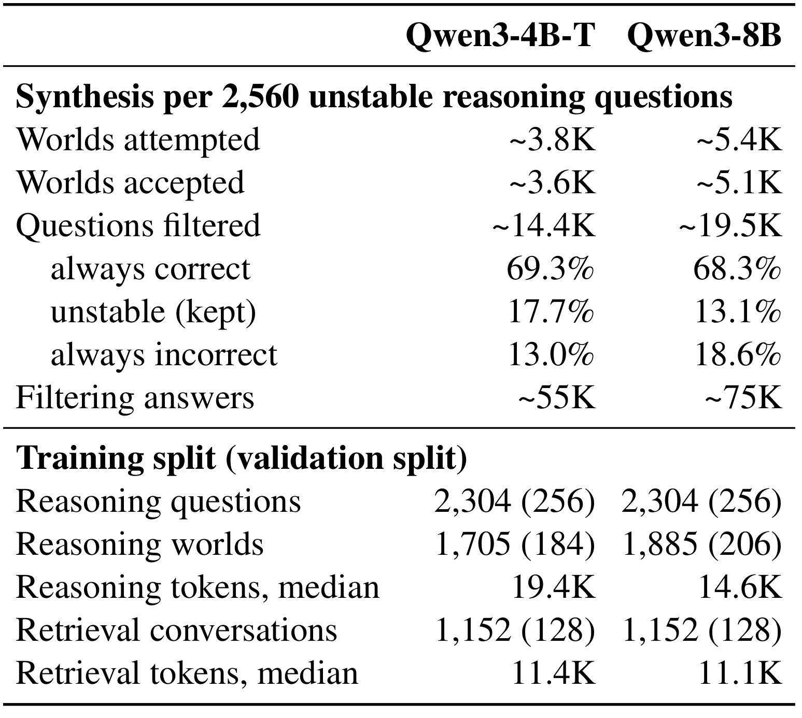
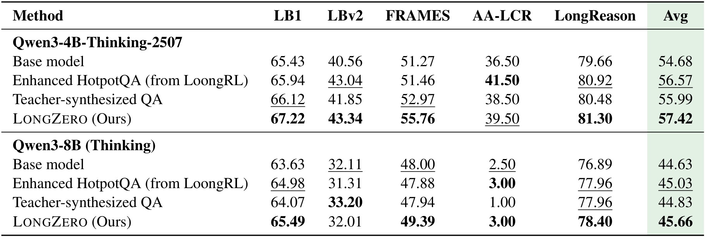
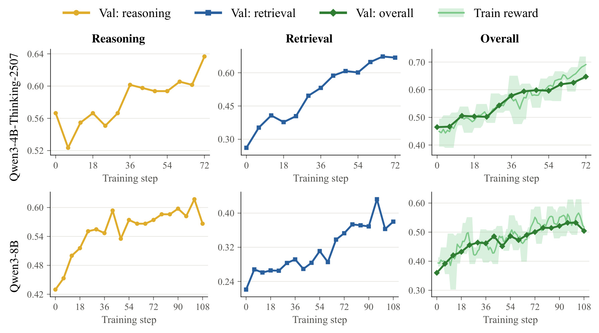
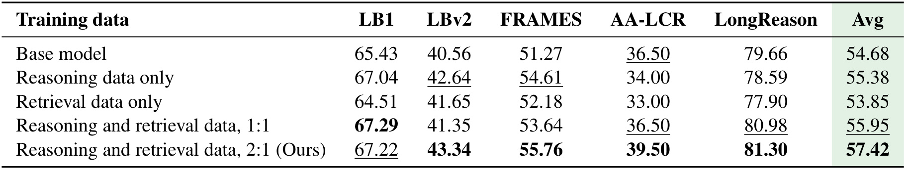
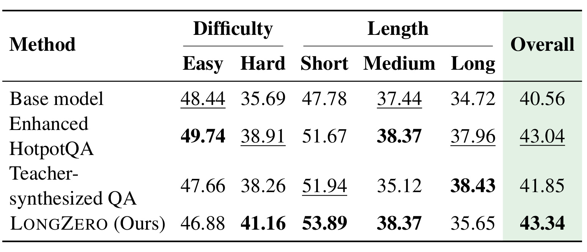
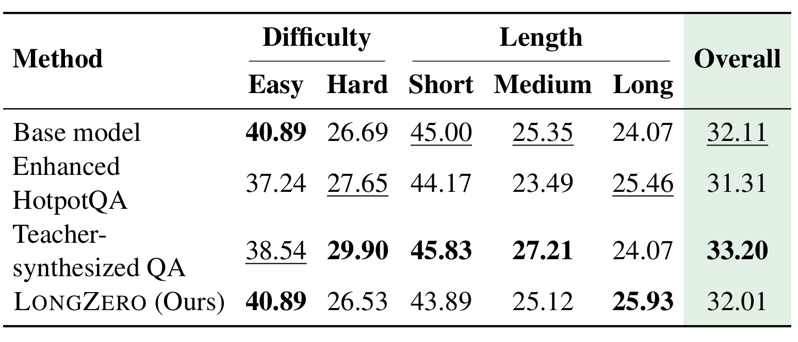

LongZero：先写短证据规格，再用自生成长文训练推理
论文：LongZero: Enhancing Long-Context Reasoning in LLMs from Zero Data。作者为 Zhennan Wan、Jianfei Chen，第一作者机构为清华大学，首页列出计算机系、人工智能研究院、BNRist、THBI Lab 和清华大学—博世联合机器学习中心。论文属于长上下文后训练与自生成数据方向，原始版本于北京时间 2026年10月22日01:59 提交，本文按2026年10月23日调研记录阅读。论文入口：arXiv:2610.30132。官方代码与数据仓库已核验可访问，本轮没有运行作者实现；下文数值均为原文报告，差值计算仅用于解释。
长上下文强化学习需要足够长、多样、困难且可验证的数据，但人工标注昂贵，自然数据稀少，现有合成又依赖外部语料或更强教师。
1. 背景和问题
LongZero讨论的核心瓶颈，是怎样让当前模型为自身提供仍然有训练价值的长上下文任务。长输入推理不同于把短问题前面接上一段无关材料：模型必须从多份文档中找到被分散陈述的证据，辨认相似人名和机构名，跨越若干关系，再把最终答案限制在真实证据支持的范围。能装下几十万词元只是输入容量，能正确完成这些动作才是能力。论文因此把数据要求拆成长度、证据检索与整合、适当难度、答案可自动验证四个方面。任何一项缺失都可能使强化学习停留在形式上的奖励上涨。例如，文档很长但答案可以靠常识说出，更新就不必改善长文阅读；答案正确却无法可靠验收，也可能把更新方向推错。
既有数据途径各有合理性，却都面临持续供给限制。人工需要阅读完整材料、设计跨文档问题并校验答案，成本比写普通短问答高；自然存在的长文问答规模小，难以持续满足采样更新。把已有多跳问答加上干扰文档可以增加输入长度，却仍继承原问题与证据分布。让强教师对真实文档提出问题，可以降低人工参与，但需要付出外部模型调用费，教师提出的难题也未必恰好落在受训模型可学习的区间。论文还提醒，真实世界实体带来参数知识捷径：模型可能凭记忆答对，训练日志却无法直接区分它究竟读了材料还是调出了预训练知识。公共文本与评测语料的潜在重叠，也使合成数据来源成为需要交代的变量。
“零数据”自训练的已有成功主要来自短上下文领域。在代码和游戏中，程序执行或环境规则可以直接给出对错，任务描述本身又比较短。迁移到长上下文时，生成器既要制造一整套长材料，又要保证问题、证据和答案保持一致。如果先让一个长文推理尚弱的模型写完文档，再要求它就该文档提问、作答和验收，生成过程正好依赖它还没有掌握的能力。文档越长，细节遗漏、人物关系漂移、跨段矛盾和题目歧义越难排除。让同一模型反复评判自己的长文本，还可能只是稳定重现同一种理解偏差。论文的新切口来自生成顺序：把必须精确控制的东西放在短规格里先确定，再把承担阅读负担的长文本放到后面生产。
这一逆序思路并不试图从无知识的模型中创造知识。受训模型已经拥有预训练得到的语言、结构化输出和基本推理能力；程序还提供领域、文体、命名风格等种子列表，以及任务装配与验收规则。这里的“零”指不使用外部文章作为训练内容、不要求人工标注新问答、不调用更强教师来写题。检索任务使用公开MRCR数据中的格式与常用名词列表，也说明它不是字面意义上没有任何人为设计输入。合理的理解是把外部训练语料和教师依赖压缩为轻量任务规则，而不是把先验、程序或预训练都消除。这一边界对于评估论文贡献很重要，否则容易把一种数据工程设计误读成完全自主发现问题的通用智能系统。
LongZero选择虚构世界作为推理材料，还有更细致的控制目的。同姓人物、名称近似的组织、不同年份的职位和相近产品，让模型不能仅靠词面重合取答案。设定中的事实必须足以组成多跳链条，而不是只在长文里重复目标名。支持事实分散到不同文档，问题中对中间实体尽量使用描述性指代，迫使模型先解析关系。虚构实体削弱了现实知识捷径，却没有自动保证生成分布足够接近真实文档；真实材料中的缺失、冲突、隐含前提和表格证据远比合成传记复杂。因此论文需要外部分布评测，而不能只展示自写任务上的验证提升。本文把五项公开基准的迁移结果视为主要效果证据，把自生成验证集上的奖励视为训练是否发生的辅助证据。
另一条必须预先区分的界线是“参考答案先确定”与“全文语义保证正确”。先写短规格使程序知道答案来源，也能检查答案字符串是否保留，但规格自身可能存在矛盾，展开也可能偷偷改变关系。在长文中发现答案名称，不代表所有支持链都完整，更不代表没有另一个同样被支持的答案。原文附录主动给出一个矛盾题通过过滤的案例，这使本文能够准确界定方法：它降低了对长文裁判的依赖，仍然需要面对语义一致性问题。对工程实践而言，价值在于把不可控的大段文本验收拆成较小对象，而不是宣称每道题都获得了数学证明。
从实验设计看，论文比较的是同一训练算法之下的不同数据路线。两个底座各自生成、筛选自己的样本，再用GRPO更新；对照包括增强HotpotQA与强教师生成问答。这种设计有助于说明数据来源有实际影响，但没有把所有数据量、上下文长度、过滤器和奖励实现都完全统一。尤其增强HotpotQA使用自身的提示与精确匹配规则，教师问答的典型输入长度又比LongZero短。因此，本文关注的是整套自生成配方在这些配置下是否有效，以及哪些部件支撑结果。把它进一步解释成所有外部语料都不如自生成、所有强教师都没有价值，都会超出本文证据。带着这些问题进入方法部分，才能同时看清方案的简洁性与它留下的验证空间。
对读者来说，判断这类工作的关键是同时保留数据来源、答案真值和能力迁移三条证据链。来源可控只能说明不必获取外部语料，不能替代真值核验；真值检查通过也不保证训练题足够困难；训练奖励上升则还需真实任务结果支持。这三个条件各有失败方式，论文把它们组织在同一配方中，后续分析也必须逐一追踪。
2. 方法
2.1 先确定短规格再展开证据

Figure 1上半部分将语料扩写、强教师问答和直接问答合成都接到外部材料上，下半部分则让策略模型先产出问题、证据和答案，再展开成长文。真正改变的是可验证信息与长文本的生成先后次序：目标答案在长文出现前已经存在，训练时可以使用规则比对，避免让另一个长文裁判承担每次打分。图中的直接箭头对应短规格生成，间接箭头表示通过展开形成长上下文；随后模型读这些上下文回答自己提出的问题，奖励再作用于策略。这个结构解释了为什么它不需要更强教师，但图本身没有画出所有质量检查，更没有证明展开不会引入新矛盾。阅读时还应注意，受训模型同时扮演数据作者与解题者，是同一底座在不同调用阶段的角色划分，并不是两套互相独立、能保证交叉纠错的系统。论文当前实验先构造数据再训练，未来工作才包含让更新后的模型继续重生成、重过滤，因此图中的闭环不能被理解成已验证多轮无限自我提升。对比外部路线也应聚焦数据依赖，不应把下半部分没有画出昂贵生成采样误读成零算力消耗。短规格只是把错误面缩小，后续仍需要文本忠实度检查和能力匹配过滤。这也决定它更接近受控训练数据生产，而非无需规则的开放式探索；当原子事实和题型都由同一生成模板约束时，任务多样性需要另外评估。生成顺序带来的另一收益是定位错误更容易：可以分别追查规格、规划和扩写，而不用将整份长文都视为不可拆分的生成结果。这个可审计性是方法的工程吸引力，但仍需要保留中间产物才能兑现。
论文用启发式关系表达任务难度的三个控制轴，原文公式（1）为：
符号解释：$x$是长上下文，$q$是问题，$|x|$是上下文词元数，$H_q$是问题所需推理跳数，$K_q$是模仿支持事实的干扰事实数。比例号只表示设计方向，并非拟合得到的定量模型；不能据此推算加倍文长就必然使难度翻倍。规格阶段控制关系链和干扰，展开阶段控制长度，因而这些因素能够相对分离地调整。
具体输入是程序采样的领域、文体与风格卡。十二个领域包括科技、生物医药、航运、铁路等；八种文体包括公司史、分析师笔记、播客转录、监管文件摘要等。风格卡约束四十年时代区间、命名风格及禁用常见名。模型先输出严格JSON的世界规格，包含实体集、原子事实、干扰事实和问题集合。每个世界要求八至十四个实体、四条三至五跳问题链，每条链配置二至三个干扰事实；至少两个人同姓、至少两个组织名称易混淆。每题需要列出支持事实ID、具体答案与等价别名。中间实体在题目中尽量用描述指代，最终答案则必须是事实中直接出现的人名、地名、产品、标题或数值，使规则奖励有可匹配的目标。

Figure 2把左侧推理管线和右侧检索管线并排展开。左侧的虚构公司与人物先形成原子事实，再由规划步骤把它们投放到八份不同文档；实线事实与虚线干扰都被安排到明确位置，展开时每份文档只应陈述获分配的事实。图中产品开发与使用者证据分居不同文档，另一个相似机构及其产品构成干扰，读者必须组合关系才能识别目标人物。展开后的上下文约一万九千七百词元，已经远长于初始规格，但关键问题与答案没有等到长文完成才临时推断。规划承担证据布局，展开承担阅读负担，两者职责不同。右侧则不依赖跨文档事实链，而是从模型自写的相似响应里取指定序号，目标前缀和第几条响应由程序决定。两种任务共同形成训练集，却提供不同信号：一类需要合并关系，一类需要精确辨识并复现。图里的文本框是原始框架对象内部的实例说明，不能把这些例子当成真实历史事实；它们的作用是显示词面相近、关系不同如何形成干扰。也要区分图中设计约束和实际保障：把支持事实计划到不同文档，不等于每次展开都严格遵从，论文为此增加ID修复、指令泄露检查和答案出现门槛，但没有逐句证明全部语义关系始终一致。图中的“答案构造正确”主要对应短规格中的既定目标和检索序号，而非对整个世界的一致性作无条件承诺。若展开额外补出一个同样满足问题描述的人物，答案仍在文档中却不再唯一，这正是后文附录案例揭示的问题。
规划阶段为每个事实指定文档，尽量拆散同题支持事实，并把干扰事实与被模仿事实分开。程序移除幻想出来或重复的事实ID，将漏放事实加入当前最小文档；随后模型独立扩写八篇文章，每篇获分配事实应该各出现一次，其他文档的事实被列入禁用列表。规格和规划最多重试两次，解析失败则放弃世界；八十亿底座还检查问题数和文档数严格匹配。展开存在长度上限，过长文档按段落边界截断；带有“嵌入事实”等任务指令泄露的文本会重生成一次，仍失败则淘汰。最后打乱八篇文档并拼接成上下文，只有答案或等价别名在规范化文本中出现的题才保留。裸年份答案因容易偶然出现而有特殊处理，每世界至多一题。这里能检测答案丢失，不能检测所有链条错误，特别是同一主体被赋予两个互斥值时，仅看目标字符串仍可能通过。
2.2 自写对话检索与不稳定题过滤
检索数据沿用MRCR的任务形式，由十种格式和四百三十四个常用名词组成四千三百四十类请求。模型对每类请求写一百个响应，得到四十三万四千条候选池；程序随机选一个目标请求，取八个不同响应作为针，其余位置加入其他请求的响应作为干扰，最后要求复现同类请求的第若干个回答，并在前面加十位随机字母数字串。训练目标不是让模型新写一首诗，而是找到既有历史中的特定版本，保留其原样文本。原文正文所定义的构造关系为：
符号解释：$s$是随机前缀，$a_k$是目标请求的第$k$个响应，$\Vert$表示字符串拼接，$y^{*}$是参考答案。因为序号和响应位置由程序掌握，这一目标不需要语言模型作语义裁判。输入长度在八千一百九十三到一万六千三百八十四词元间抽样；最终训练与验证分别为一千一百五十二、一百二十八条对话，不做难度过滤。四十亿思考模型无法关闭思考，构造响应池时需处理思考结束标签；该工程细节说明看似简单的自写响应也有模型模板依赖，复现时不能只替换模型名称。
推理题则需要能力匹配。GRPO比较同题多个回答的相对奖励，若一组全对或全错，组内没有可用的结果差异。LongZero用当前底座对每题分波回答，每波两次、至多四次，看到一对一错立即保留，前四次结果一致则丢弃。保留的是“当前采样下不稳定”的题，既非人类难度标签，也不是保证可解的逻辑证明。验证集按世界ID哈希留出，避免同一个虚构世界同时出现在训练和验证。过滤提示带文档块标记并要求短答与证据块，而训练时八篇文档直接拼接且不带标记，模型仍需适应更接近自由阅读的输入组织。这个细节意味着过滤时的答题分布和训练时不完全相同。
不稳定题可能来自真正难题，也可能来自答案歧义或自相矛盾。 原文认为一直错的题经常存在缺陷，因此过滤能够顺带排除一部分坏样本，但同一个坏题只要偶尔迎合既定答案，仍会进训练集。这里没有独立真值来源，不能把“当前模型有时答对”直接等同于题目可靠。另一方面，四次采样只是有限观察，全对或全错不等于真实成功率恰好为一或零，一些低概率但有效的难题也会被排除。后续数据课程若要随能力推进，需要重新生成和重过滤，而论文当前没有提供多轮更新的实验证据。
2.3 GRPO与两类可验证奖励
模型接收固定训练集后，以GRPO对同一输入生成八个响应。原文公式（2）把每条响应的结果奖励转为所有词元共享的优势：
符号解释：$i$是组内响应索引，$t$是响应词元位置，$r_i$是该响应奖励，$\boldsymbol r$是整组奖励，均值作为相对基线，标准差用于归一化。奖励相同的组没有差异信号，解释了前一步过滤的算法动机。它仍是结果级监督，整段推理中哪一步有错没有被单独标注。原文公式（3）采用词元平均目标：
符号解释：$\theta$是策略参数，$o_i$是旧策略采样的第$i$个输出，$|o_i|$是其长度，$G$为组大小，$\ell_{i,t}$是单词元优化项。分母把所有输出词元统一平均，遵循DAPO式聚合，区别于先把每条响应归一化再取平均；不同长度响应的总权重因此变化。原文公式（4）为：
符号解释：$\rho_{i,t}$是当前策略与旧策略对该词元的条件概率之比，$\epsilon$为截断范围，$\pi_{\mathrm{ref}}$为初始参考策略，$\beta$为约束强度。截断限制单次更新偏离采样策略的程度，KL项进入损失而非先加进任务奖励，保持相对优势的奖励含义。原文公式（5）采用逐词元估计：
符号解释：$o_{i,<t}$为已生成前缀，$\kappa_{i,t}$为参考策略相对于当前策略的词元概率比。该估计在比值为一时为零，帮助限制策略漂移；它不会自动修正错误参考答案。训练使用verl实现，恒定学习率百万分之一，截断系数零点二、KL系数千分之一，每步六十四提示乘八响应，最大提示三万二千七百六十八词元、响应八千一百九十二词元。
推理奖励的原文公式（6）可以写为：
符号解释：$\widehat y$取输出最后一次指定答案引导语之后的文本，参考集合包括既定答案和合法别名。匹配先统一大小写、标点、引号及空白，再要求整词跨度命中，防止数字五误匹配十五；候选文本最多比参考多一百二十八字符，防止列出大量名字刷中答案。检索奖励先检查前缀，前缀不对即零分，否则用Python序列匹配相似度比较剩余内容与目标响应，提供部分正确的连续奖励。训练改变模型参数，推理部署只需要更新后的策略模型，不再运行虚构世界生成器；若继续收集下一轮训练数据，才需重新执行合成与过滤。精确文本匹配可以便宜地执行，但它对语义正确性和别名完整性仍然敏感，尤其不能把匹配得分当作逐步推理忠实性的证据。
3. 实验结果
3.1 合成规模与算力

Table 1上半部分是过滤漏斗。为了获得包含验证集在内的两千五百六十道不稳定推理题，四十亿底座约需尝试三千八百个世界、筛选一万四千四百题、生成五万五千个过滤回答；八十亿对应约五千四百世界、一万九千五百题与七万五千个回答。这些是根据通过率估计的合成需求，不是单次训练输入量。两者保留比例仅百分之十七点七与十三点一，大部分题始终答对，说明模型虽能写题，真正处在学习边界的题不易获得。下半部分才是最终划分：推理训练两千三百零四题、验证二百五十六题，检索训练一千一百五十二条、验证一百二十八条。四十亿推理文长中位数一万九千四百词元，八十亿一万四千六百；检索约一万一千词元。相同最终训练量不代表相同生产成本，八十亿需要更多候选与过滤回答，合成文长反而更短。作者将此与底座长文能力联系起来，但没有独立消融把生成忠实度、答题难度和文长效应拆开。更低保留率不能直接读成模型更弱，也可能来自题分布更难，需要结合坏题审计判断。共享世界使有效独立样本数不同于题数，按世界切分验证集因而更合理，但不能消除所有模板重叠。最终比例还受匹配规则影响：如果别名被过度收紧，本来正确的回答也可能被记为错，进而改变保留集合。
训练在八卡A800-SXM4-80GB节点完成，四十亿七十二步约二十七小时，八十亿一百零八步约二十九小时，作者分别估算二百一十三与二百三十GPU小时。每个检查点五基准各跑两次，评测约十二小时、约一百GPU小时，AA-LCR另需二百次模型裁判调用。这些数字支持不依赖大教师与特定配置下的成本描述，却没有完整合成池、失败重试和筛选的端到端费用对账。检索响应池达到四十三万四千条，不能由最终只有几千训练样本推出数据几乎免费。迁移实践最应补齐每有效样本的总生成词元、筛选词元、失败率和单位效果成本。
基准覆盖五类长文任务。LB1采用三个多文档问答子集的F1；LBv2有五百零三道四选一；FRAMES有八百二十四题与给定百科文章，按答案包含关系验收；AA-LCR一百题的材料长约七万二千到十一万五千词元，用指定模型裁判；LongReason使用三万二千词元划分、七百九十四道选择题。无权平均只是汇总方便，不表示指标具有相同统计误差或能力含义。论文报告两次评测均值，没有置信区间，零点几分优势需要保守理解。四十亿原生长窗口与八十亿评测时才加YaRN的设置不同，后者训练未用YaRN，不能单凭参数量比较长文能力。
3.2 五基准主结果

Table 2中，四十亿底座平均从五十四点六八升到五十七点四二，增加二点七四个百分点；增强HotpotQA为五十六点五七，教师合成为五十五点九九，LongZero分别领先零点八五与一点四三个百分点。分项LB1为六十七点二二、LBv2四十三点三四、FRAMES五十五点七六、AA-LCR三十九点五零、LongReason八十一点三零。它五项都超过自身底座，却没有全部超过外部数据基线：增强HotpotQA在AA-LCR达四十一点五零，高于LongZero。最大绝对提升来自FRAMES，由五十一点二七到五十五点七六，增加四点四九个百分点，说明虚构实体训练对真实百科材料的多事实组合存在迁移。八十亿平均由四十四点六三到四十五点六六，增加一点零三个百分点，领先增强HotpotQA零点六三、教师零点八三；LBv2三十二点零一却低于底座三十二点一一和教师三十三点二零。两个底座平均最好不能改写为所有任务都更好。改善幅度不同，也不支持参数越大收益越大的趋势。八十亿AA-LCR三分与增强基线并列，四十亿对应任务落后，跨任务平均需要连同这些反例一起报告。作者没有给出独立训练重复的显著性证据，本轮也未复现；具体分差是该配置下的报告结果。原文用粗体呈现逐列最好，读者若只看绿色平均列就会漏掉这种结构性差异。外部分布的结果比自生成验证集更有说服力，但多项评测之间仍共享长文问答形式，不能等价为所有长上下文应用均受益。尤其开放式报告写作、引用完整性和多模态文档均不在该表直接测量范围。实际采用时应先选与业务问题最接近的列，再判断平均分是否具有决策意义。
教师基线生成器Qwen3.5-397B-A17B远大于受训底座，仍没有最高平均分。合理解释是能力匹配、证据布局和验收设计可能比生成器规模更直接影响更新信号。不过教师数据上下文中位数约四千七百词元，比LongZero短；增强HotpotQA使用五千一百二十题与另一套提示和匹配规则。即使RL主要参数和最终检查点一致，这仍非只改变教师有无的纯单变量实验。配方在报告设置下胜过两个实现可以成立，否定所有真实语料或教师路线则不成立。题型多样性、实体复杂度与有效难度也不能只由条数衡量，后续需要等总词元、等过滤预算、统一奖励再比较。
附录LB1拆分说明训练题来源与测试收益并不机械对应。四十亿HotpotQA原分六十七点零四，增强HotpotQA训练后六十六点五九，LongZero六十七点一七；而后者2Wiki与MuSiQue达到七十九点六二、五十四点八六，整体收益主要来自后两项。八十亿LongZero三个子集分别为六十六点九零、七十八点二零、五十一点三八，MuSiQue仍略低于增强基线五十一点六零。平均最高可能由互不完全一致的收益构成，不能把同一机制强行归因到所有任务。当前更可信的是若干真实任务确有改善，多跳、检索与干扰辨析各自贡献尚未被细粒度分离。
3.3 训练动态与混合消融

Figure 3上排四十亿、下排八十亿，左中两列分别是自生成推理与检索验证，右列叠加加权验证和训练奖励。横轴训练步数，验证每六步记录，浅色带为训练奖励五步窗口内范围，并非跨随机种子置信区间。两类验证总体随更新上升，四十亿检索从约零点二六到零点六七。验证按世界划分，减少相同背景直接泄漏，说明训练不只是在记住训练世界。八十亿末段波动明显，不能推出延长训练一定有效。这仍是生成分布内部验证，不能用右侧训练和验证接近替代真实任务验收。最终检查点预先固定有助于限制逐任务挑点，却不等于多种子稳定性已获证明。图中也未检验多轮自举是否会收敛到模板题型，上升只支持当前信号可学习，不能证明所有题逻辑正确。若有错误答案在模型间稳定传递，验证分数仍可能上涨，外部基准与独立题目审计因此缺一不可。未来更应把奖励曲线、语义坏题率与最终答案率一起记录，才能解释更新成功的具体含义。

Table 3中，四十亿只用推理平均五十五点三八，高于底座五十四点六八，但AA-LCR从三十六点五零降到三十四，LongReason从七十九点六六到七十八点五九。只用检索平均五十三点八五，甚至低于底座，LB1、AA-LCR与LongReason均下降。一比一混合升到五十五点九九，推理比检索二比一进一步升至五十七点四二，在四项最好，LB1略低于一比一的六十七点二九。检索价值在与推理搭配，不能由精确检索是基础能力推导出检索越多越好。单独复现历史响应不必然转成跨文档论证，适量检索可能缓解纯推理训练的能力损失。当前支持互补，却未扫描更多比例、固定各任务数量或给出多种子统计；配比变化也改变各类任务曝光量，二比一不能直接成为新模型的普遍最佳配方。尤其主结果领先最强外部基线仅零点八五分，复现时应先检查互补是否稳定，再扩大合成规模。论文没有逐一关闭不稳定过滤、文档规划和虚构实体，所以该表不能说明各部件贡献多少。互补只是任务层面的观察，不是完整机制分解。对于下一轮实验，可以先保留总预算、再改变比例，并记录每类奖励和外部各子集，而不是只看最终平均列挑最好比例。即使在同一比例下，检索对话的相似程度、序号分布和响应长度都可能改变学习难度，推理世界的关系链与干扰数量也一样。因此复用二比一时还应保存实际采样分布，才能判定复现差异来自模型本身还是课程已经发生变化。该表给出的启发是先确认协同，再优化资源分配。
3.4 长度分桶和失败案例

Table 8给出比泛化到更长输入更细的图景。四十亿困难题从三十五点六九到四十一点一六，增加五点四七个百分点；简单题却从四十八点四四降到四十六点八八。短输入从四十七点七八到五十三点八九，增加六点一一；中等从三十七点四四到三十八点三七，长输入从三十四点七二到三十五点六五，后二者各增零点九三。尽管训练主要在数万词元内，更长输入也有收益，但最大增益来自短桶，不是越长收益越大。长桶教师三十八点四三、增强HotpotQA三十七点九六，均超过LongZero。难度与长度是分别汇总的切面，不能把困难题收益全解释成更长文阅读提升。该表同时支持迁移存在和幅度有限，不能只引用困难题改善却省略简单题下降。原文未给桶内显著性检验，较小差值不应使用稳定或全面领先等强表述。更有价值的是将困难但短、简单但长等交叉切面分开，定位模型究竟增强了关系推理还是只是更能忽略干扰；当前两组边际统计不能完成这种归因。

Table 9里八十亿整体略降，却在长输入桶从二十四点零七到二十五点九三，增加一点八六个百分点，达到比较方法中最高；简单题维持四十点八九，困难题从二十六点六九到二十六点五三，短、中输入也下降。局部长度收益可以被其他子集损失抵消，不能只选最好分桶。八十亿长窗口依赖评测时YaRN扩展，训练未用，输入输出预算耦合更明显，失败不能全归于数据生成。AA-LCR中原文直接报告两百个LongZero回答里一百二十个没有最终答案：长输入占去窗口，思考耗尽剩余预算，使全部方法分数仅一至三分。改善合成数据未必能解决此类预算约束。该表适合作为诊断线索，不能掩盖LBv2低于底座的事实。复现应同时记录最终答案率、截断率与有效回答条件下准确率，区分阅读错误和预算失败。不同窗口条件下平均分口径也不可简单横比，否则把模型容量、位置扩展和后训练效应合成一个数字，难以解释失败。
附录C把答案先定的漏洞展示得很具体。一个正确问题要求找某公司开发产品的使用者，支持事实位于不同文档，相似机构的另一个产品构成干扰；模型一轮答出目标研究者，一轮错选创始人，被保留。另一个坏题问首次使用年份，规格答案一八九七，干扰却有一八九零和一八九六；四次回答均选更早年份，因与既定标签不符被丢弃。这里过滤排除了坏样本，却没有识别其逻辑缺陷，只是利用模型没有接受错误标签的现象。它同时提醒真实推理正确与奖励正确不是同一个概念：对问题语义更忠实的答案，也可能被已有字符串标签判零分。
最关键的第三例是同一铁路公司在两篇文档里分别由两个同姓人物创办，规格只指定一人作答案。模型一次选甲、一次选乙，满足不稳定标准，题便进入训练；有文档支持的回答会被规则判错。这直接否定过滤后数据已被语义验证的强说法。作者建议展开前做规格一致性检查，但未报告总体坏题占比、独立标注准确率或该检查消融。因此后续优先任务是量化关系冲突、答案唯一性和展开保真度，而非机械加长文本。只有标签可靠，更多样本和更多更新才能稳定转化为能力。
4. 总结
LongZero将长上下文任务合成拆成三个层次：短规格锁定问答关系，文档规划控制证据与干扰分布，独立扩写制造阅读负担；再按同底座答题不稳定性选题，搭配程序构造的检索任务，用现成GRPO更新。最值得借鉴的是在短对象上控制真值，再让长文本承载能力训练。它不依赖更大教师，虚构实体降低现实知识捷径，两个底座、五项公开任务给出初步迁移证据。四十亿平均增加二点七四个百分点，八十亿增加一点零三个百分点，说明方案有实际效果，同时也处于应认真复现的幅度范围。收益不能外推为所有长文应用更好，主表明确包含反例。
局限有四层。第一，规则保证既定答案可匹配，不保证世界无矛盾；双创始人反例说明噪声可能被过滤保留。第二，数据局限十二领域与有限文体、多跳链，缺少图表证据、缺失信息及开放比较，外部任务迁移不等于覆盖全部长文能力。第三，两个底座同属一模型家族，八十亿的窗口和思考预算明显影响结果，其他架构与更强模型尚待验证。第四，平均分混合多种指标，只报两次评测均值，没有置信区间，部分领先很小，不能把排序当稳定统计结论。另有实际约束是不调用教师并不表示费用可忽略，响应池与过滤回答很大，完整端到端费用尚未对齐。这些限制中，有些是论文未测，有些由原文反例直接支持，二者应分别对待。
首要跟进是规格级一致性与答案唯一性审计。可保留实体关系图，检查同角色、时间与组织的冲突，再让展开证据回指原子事实；这是复现建议，不是已完成部件。第二，应在同底座统一文长、总词元、过滤预算和奖励模板，比较自生成与教师路线，拆开匹配优势与来源优势。第三，应重跑多种子，报告答案率、截断率及长度分桶，先解决八十亿AA-LCR无答案再判断推理收益。第四才是作者提出的多轮重生成、更多文档与计数比较算术题；扩展时需同时监控题型多样性与坏题率，避免自举放大模板和噪声。读者最有理由关注的是这些约束能否在更强底座上持续成立，而不是只追逐下一版更高平均分。
当前可尝试范围是已有中小思考模型、缺少长文训练语料、又能承担离线合成和规则验收的场景。先用小规模世界检查题目可靠性，再按底座通过率选择边界，比直接海量写长问答更可解释。如果业务需要真实知识更新、严格引用或多模态证据，仍需外部资料与更强验收，论文不能替代这些输入。原文没有线上服务或业务收益，不能由公开基准改善推断部署效果。复现实验应将学习到的能力与算力预算一起记录，保留原始题、证据布局与奖励日志，遇到错误才能区分生成、过滤和更新各环节。持续关注结构化规格能否真正降低错误标签率，以及公平预算下能否稳定迁移到真实任务；这两条同时成立，才有理由把零外部语料路线用于长期训练数据生产。
一个实用复现起点是固定少量世界，逐题人工核对后再扩大，不先追求论文全部训练规模。这样能更早发现同姓歧义、年份冲突和别名匹配偏差，也能让后续成本比较建立在确实可学习的样本之上。